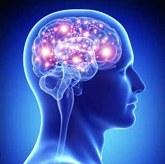

What are the cognitive skills?
Cognitive skills are the brain's core mental abilities used to think, read, learn, remember. They are what your mind uses to process information, interact with the world, and solve problems.
Types of Cognitive Skills
- Memory
- Processing Speed
- Sensory Processing
- Attention
